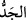

Mânâsı: “Allah’tan başka ilah yoktur! O birdir, tekdir! Ortağı yoktur, mülk ve hamd
O’nundur. O her şeye kâdirdir. Allahım! Senin verdiğini kimse engelleyemez. Senin
engellediğini kimse veremez. Allahım! Senin lûtfun, kudretin olmadan hiçbir güç
sahibine gücü fayda vermez.”[56]
Burada “ kelimesi, haz, pay ve dünyada öne geçmeyi ifâde eder. Böylesi bir
kazanımın zengin bir kimseye sağlayacağı fayda, senin amel ve taat karşılığında
vereceğin bedele kıyasla bir fayda sayılmaz. Kula ancak ameli ve taati fayda verir!
Muaz b. Cebel (r.a.)’dan rivayet edilen merfû bir hadiste şöyle buyrulmuştur: “Bu
ümmetin hayırlıları, şerlileriyle dost ve arkadaş olmadığı, iyiler facirlere hürmet ve
tâzim etmediği ve kurrâları Allah’a isyan noktasında emîrlere (yöneticilere) yardım
etmediği sürece Allah’ın rahmet ve kudret eli hep ümmetin üzerinde olacaktır.”[57]
Ancak ümmet bu kötülükleri yaparsa Allah onlardan rahmet ve kudret elini çeker.
Keşfü’l-esrâr sahibi der ki: İdrâk sâhipleri bu âyetin müminler ve erbâb-ı irfânın
fetihleri hakkında olduğu görüşündedir. Onlar için olan fetihler, aramadan ve istemeden
gelir. İki kısımdır: Birincisi, çalışılmadan elde edilen rızık gibi “mevâhib-i suveriyye”
kabilindendir. Diğeri ise “metâlib-i ma’neviyye” olup öğrenilmeden elde edilen ilm-i
ledündür.
Onun lütuf eli, ilim ve hikmet nüshasıdır.
Kalemsiz olarak gönül sayfasına yazar.
Gönül ehlinin ilmi mektepten öğrenilmez.
Belki Rabb’in özel telkini ile öğrenilir.
Akıllı insan maddi (sûrî) ve manevi rızkın kendisine zorluk, meşakkat ve yorgunluk
olmadan gelmesi için çalışmalıdır. Rivayete göre Şeyh Ebû Ya’kûb el-Basrî der ki bir
keresinde harem-i şerifte on gün kadar aç kaldım. İyice zayıf düştüm. Dışarıya, vâdiye
çıkayım; belki açlık ve zafiyetimi giderecek bir şeyler bulurum, diye düşündüm.
Haremden dışarı çıktım. Dışarıda bir köşeye atılmış bir şalgam buldum ve onu aldım.
Bir de öteden bir adam gelip önüme oturdu. Yere bir nevâle ve azık çantası koydu ve
bana “Bu senin olsun” dedi. Ben ona: “Nasıl benim olacak? Ne oluyor?” dedim. Adam
dedi ki: “Biz bir grup arkadaş on gündür denizde yolculuk yapıyorduk. Gemimiz batma
tehlikesi geçirdi. Bizden her bir arkadaş şayet Allah Teâlâ gemimiz batmadan bizi bu
fırtınalı yolculuktan sağ salim kurtarırsa bir miktar sadaka vermeyi adadı. Ben de şayet
Allah beni sağ salim kurtarırsa harem civarında karşıma ilk çıkan kimseye bu nevâle ve
azık torbasını sadaka olarak vermeyi adadım. İşte karşıma ilk çıkan da sen oldun”, dedi.
Ben adama “torbayı aç dedim”; adam torbayı açtı. Torbada güzel pişkin kek, badem ve
bir miktar şeker vardı. Ben “bu nevâlenin hepsinden biraz aldım ve geri kalanını benim
hediyem olarak çocuklarına götür; ben senin ikramını kabul ettim”, dedim. Sonra kendi
kendime “Hey mübarek adam! Senin rızkın on gündür sana geliyor; sen onu vâdîde
arıyorsun”, dedim.